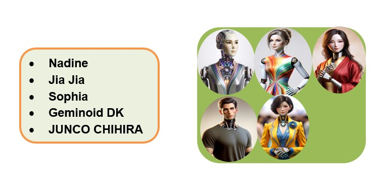

Popular Humanoid Robots
As of last update year of 2023, some of the most popular humanoid robots, known for their advanced
capabilities and interactions with humans, include:

These robots are engineered for advanced interaction with humans, equipped to utilize human tools and
provide customer assistance. Beyond service roles, their applications extend to meticulous tasks such as
inspections and maintenance work. These automatons feature artificial skin and visual systems, emulating
human texture and sight, although they are constructed from non-organic materials. Contemporary models
have evolved to communicate verbally, navigate environments bipedally, and demonstrate a spectrum of
emotional responses, closely mirroring human behaviors.